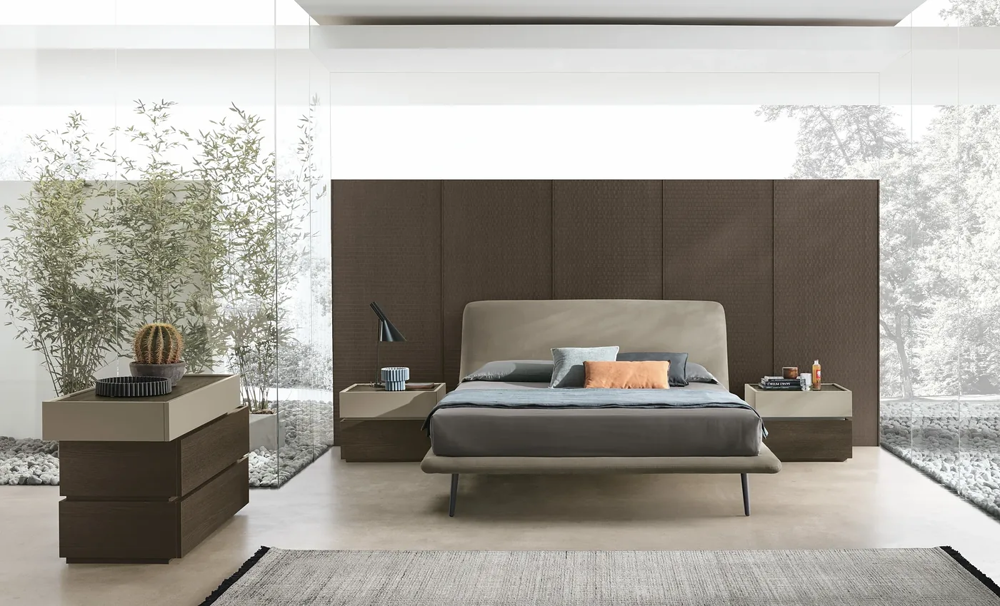

Espace literie
Que voulez-vous changer dans votre lit ?
Vous gardez le cadre, vous manquez de place à deux ou vous aimeriez lire le dossier relevé ? Commencez par le choix qui vous concerne.
Nos guides
Par où commencer ?
-

Le matelas
Bien choisir son matelas
-

Le boxspring
Fixe ou électrique ?
-

La largeur
Quelle place pour un lit plus large ?


Venez essayer nos matelas et boxsprings.
Allongez-vous dans votre position habituelle : c’est le test le plus fiable. Notre magasin vous accueille avec ou sans rendez-vous, à Leval-Trahegnies (Binche). Parking facile d’accès.
Partager cette page
- Lundi
- 13h30 – 18h30
- Mardi au samedi
- 10h30 – 18h30
- Dimanche
- Fermé
- Téléphone
- 064 46 07 72
- Livraison
- Par nos soins, dans le Hainaut (Binche, La Louvière, Mons, Charleroi…) et la province de Namur
Nous livrons aussi dans le nord de la France. Ailleurs, dont Bruxelles : sur demande.